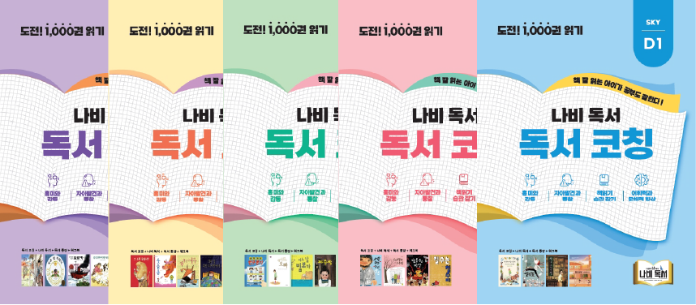

교재 소개
읽기 · 어휘 · 사고력을 단계별로 키우는 나비독서 전용 교재입니다.
TEXTBOOK
읽기 · 어휘 · 사고력을 함께 키우는
읽기 · 어휘 · 사고력을 함께 키우는
나비독서 교재
아이의 단계에 맞춰 읽기 훈련, 독서 습관, 한자 어휘, 문학 · 논리 교재를 함께 사용합니다.
 나비독서전 50종
나비독서전 50종- 독서코칭전 50종
 맹모한자전 54종
맹모한자전 54종- SDR 현대소설전 20종
 SDR 철학과 논리전 10종
SDR 철학과 논리전 10종 리틀나비예비 초등
리틀나비예비 초등- 리틀맹모예비 초등
MAIN SERIES
핵심 3대 교재


RECOMMENDED BOOKS
이달의 추천도서
나비독서가 수준과 흥미를 고려해 고른 책입니다.
- 개구리와 두꺼비가 함께 2
- 외딴집 외딴 다락방에서
- 책 먹는 여우
- 웃음총
- 그 소문 들었어
- 키다리 현주가 좋아
- 형이 형인 까닭은
- 무조건 회장
- 고집불통 내 동생